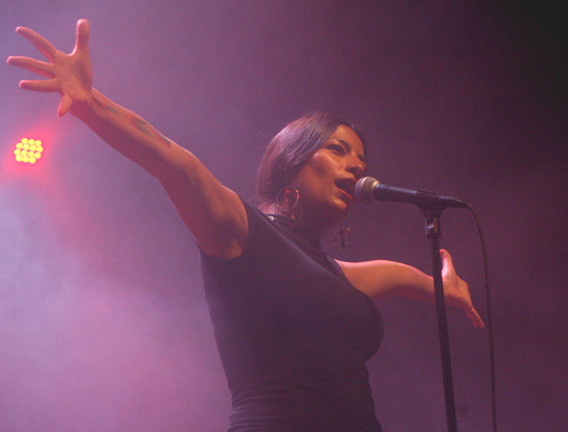

Ana Tijoux: Thalia Hall
Ana Tijoux proved she was a powerhouse player not only in the musical sense but also as an activist and for the people. SoundCulture hosted the Chilean French emcee, who performed before a committed crowd Sunday night at Thalia hall. It felt more like a Saturday than a late Sunday evening. Los Santos and Pilsen's very own Aya opened for Tijoux with a hype man coming out often between sets to keep the momentum going. Los Santos combined elements of traditional Mexican music with a contemporary rock and jazz stadium feel, while Alla, who said it was their first performance yet this year performed their chillback house and electronic music to the crowd that evening before Tijoux’s set.
Tijoux having performed in Chicago just last year at the Subterranean, came back and graced the stage of this old historical venue in the heart of the Chicago Latino community. She performed songs from her most recent album "Vengo" which has been widely successful and noted for its important themes attacking patriarchy, gentrification and cultural narratives as it serves as a road map for the stories of those whose voices often become silenced, much like those she sung about in “Sacar La Voz,” later in her set.
Tijoux is quick witted and spits lyrics off of the tip of her tongue with ease, her cadence smooth and soothing. Kicking the night off with “Anti patriarca”, she had the crowd from the beginning, waking them up a bit after two long opening sets. She performed the title track, “Vengo”, from her most recent album release as her second song of the evening. The horns and the woodwinds stood out in the track, mixed by the DJ, brought people to dance in place.
There was more than just performance in her set that evening. Intermixing between speaking Spanish and English, she also took the time to speak out against the prejudices that she finds all too rampant in the American media, which she said she saw a bit of in her hotel room. She equated the struggles of black and brown people and how they as a people are a force to be reckoned with if only they seized the power in their strengths. She raised her fist in the air, and the audience did the same and erupted into applause.
She of course did her song, “1977,” which she has etched on her arm, the year she was born, and her most autobiographical, and recognizable song, which helped to launch her career and widespread fame in the States. Her DJ, King Capo, even took to the mic and performed a few bars during her song “Sube.” His shirt said it all for the state of the evening. A cat with headphones and the word “Turnt.” Thalia Hall was definitely turnt that evening, and filled with the revolutionary words and esteem of Tijoux.


Ana Tijoux: "Sacar La Voz"
For more about Ana Tijoux:
Ana Tijoux's Website
photo credits: ciera mckissick